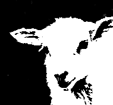

O. aries
domestic sheep
lucky numbers: 61, 22, 44 ✧
lucky numbers: 61, 22, 44 ✧
lucky numbers: 61, 22, 44 ✧
puffy-coated mammal with cloven hooves. it is widely kept as live-stock, especially for its wool and meat. may or may not possess horns. wild sheep tend to come in shades of brown, while domestic sheep can display a variety of coat colors. its pupils are horizontal and offer it excellent peripheral eyesight. may or may not have wooly faces, which impact its field of vision. tends to avoid large crowds. fearful of strangers. it obsessively tracks its finances. emotionally intelligent, but also gullible. gives extremely honest advice. friendly with hares and frogs. never knows what to say to snakes. rarely crosses paths with tigers, but something significant may happen if it does.